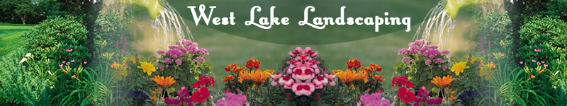

|

Principles of Landscape DesignConsistency and RepetitionCreate unity in your design by focusing on a single theme. A theme should represent something you interested in expressing about your landscape. For example, if you wish attract birds, use different kinds of structures and ornaments that birds can use for homes or resting. Keep is SimpleWhen picking plants, boulders, or other items, pick two or three colors and repeat. Keep items to a minimum for starters, you can always add more later as the need arises. BalanceTry to keep things balanced through symmetrical or asymmetrical design. Contrast items so they compliment each other, not compete for your attention. Use of lines and other geometric shapes can create the kind of balance and harmony you want to achieve. Also, as you pick your plants, keep in mind different maturity levels throughout the yard, so some plants are in bloom, while others are just beginning to bloom. ColorsRemember that warm colors will seem to make object and plants be near you, while the cool colors will make them appear farther away from you. You can intermix colors and balance them with the neutral colors of grays, blacks, and whites. Use the warm colors to draw attention to specific areas of the yard or garden.
|